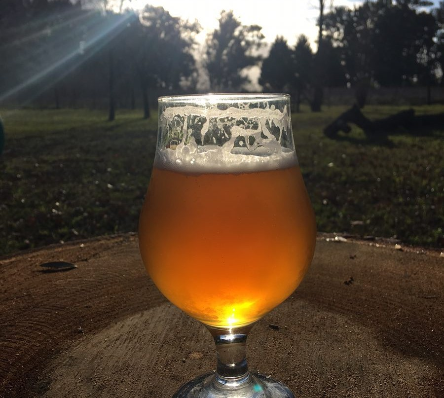
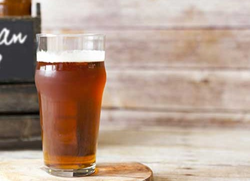

American Pale Ale
A nossa APA é mais clara e lupulada, mas não chega a ser extremamente amarga. Conseguimos atingir um ponto de equilíbrio entre o amargo com um toque suave frutal ao final da degustação. Saborosa e refrescante, com uma coloração que vai de dourado a laranja dependendo da luz do ambiente.
O aroma é de frutas cítricas e tropicais, puxando mais para o maracujá, isso graças ao lúpulo americano citra. Espuma branca, volumosa e com boa retenção. Puro drinkability!
O que é APA?
É comum que algumas pessoas confundam a American Pale Ale com a India Pale Ale (IPA), são cervejas parecidas porém a segunda é ainda mais forte do que a APA, além de usar um lúpulo diferenciado.
A American Pale Ale pertence à família Ale. Uma de suas principais características é o fato de ser fermentada a uma temperatura relativamente alta, entre 19° e 20°.
Não dá para definir com poucas palavras as principais características da família Ale. Elas podem variar demais de acordo com os subtipos de cervejas Ale existentes, indo do mais doce ao mais amargo e do mais claro ao mais escuro.
TELEBIER
Entregamos somente para a região de Torres e suas cercanias.
Click nos números abaixo e fale diretamente pelo whatsapp com Diego ou Cristiano, obrigado!
“Eu não posso oferecer nada mais que sangue, labuta, suor e cerveja.” – Winston Churchill